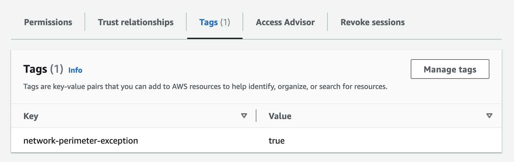
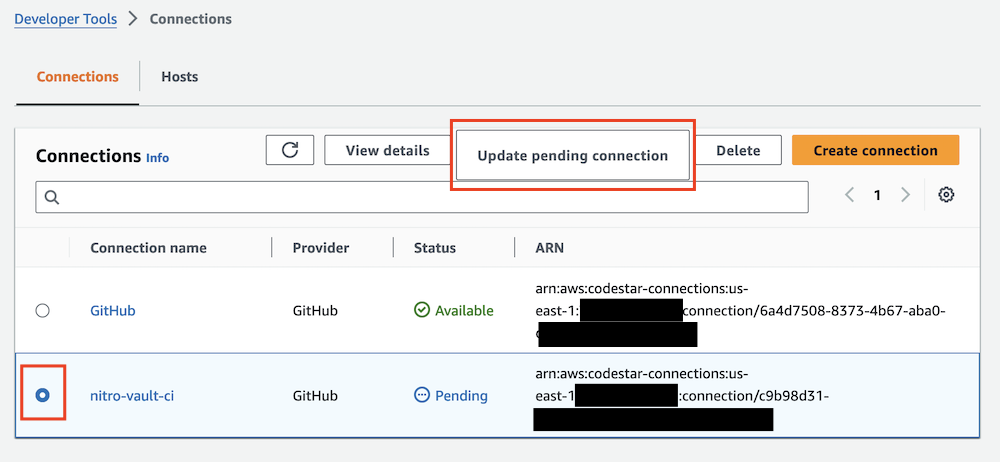

Deploying the Solution¶
The solution is developed using AWS CloudFormation, Python, and Rust.
Prerequisites¶
- You will need an AWS Account.
- AWS CLI installed and configured to use with your AWS account.
- Either an IAM User or IAM Identity Center User with the
AdministratorAccesspolicy granted to your user. Not recommended for a production environment.
Info
The solution includes a CloudFormation template called deploy_template.yml that will create an IAM role with the necessary permissions to deploy this solution.
After deploying the CloudFormation template, you can use an IAM role with the AWS CLI by configuring an additional profile in ~/.aws/config such as:
[profile nitro-vault]
role_arn=arn:aws:iam::123456789012:role/nitro-vault-deployment-rDeploymentRole-XXXXXXXX
source_profile=default
role_session_name=nitro-vault
Then in step #2 below, set AWS_PROFILE=nitro-vault to use the new profile.
Deployment¶
-
GitHub: Fork the repository to your personal account. This is required so AWS CodePipeline can access the repository and checkout the source code.
-
Edit the
.envfile and set these variables:Variable Default Description AWS_PROFILE - The name of the AWS CLI profile with the credentials and options to use. AWS_REGION - The AWS SDK compatible environment variable that specifies the AWS Region to send the request to. HOSTED_ZONE_ID - Amazon Route 53 Hosted Zone ID DOMAIN_NAME - Sub-domain to create in the HOSTED_ZONE_ID for the internal vault API GITHUB_REPO - Personal fork of this repository (ex. aws-samples/sample-code-for-a-secure-vault-using-aws-nitro-enclaves) Info
The
HOSTED_ZONE_IDandDOMAIN_NAMEare required because the solution issues a valid SSL/TLS certificate managed by the AWS Certificate Manager (ACM) for use on the EC2 instances for the Nitro Enclaves. The private key of the certificate is securely managed by ACM for Nitro Enclaves and NGINX. ACM for Nitro Enclaves takes care of automatically rotating the certificate. -
You must add a new tag to the AWS IAM Principal (either an IAM User or IAM Role) you are using to deploy this solution. If you are using the IAM role created in the
deploy_template.ymlCloudFormation template, then this step has already been completed for you.
Create a new tag key called
network-perimeter-exceptionwith a value oftrue.Info
This solution implements best practices regarding data perimeters on AWS. To learn more about building a data perimeter, please consult the Building a Data Perimeter on AWS whitepaper.
-
Execute the
deploy.shshell script to begin the deployment.> ./deploy.sh [!] Deploying nitro-vault-vpc stack... Waiting for changeset to be created.. Waiting for stack create/update to complete Successfully created/updated stack - nitro-vault-vpc [!] Deploying nitro-vault-key stack... Waiting for changeset to be created.. Waiting for stack create/update to complete Successfully created/updated stack - nitro-vault-key [!] Deploying nitro-vault-ci stack... Waiting for changeset to be created.. Waiting for stack create/update to complete Successfully created/updated stack - nitro-vault-ci [!] Updating nitro-vault-key stack with deployed Step Functions role... Waiting for changeset to be created.. Waiting for stack create/update to complete Successfully created/updated stack - nitro-vault-key [?] Do you want to create a new private signing key for AWS Nitro Enclaves? (y/n) y [+] Updating secret in AWS SecretsManager with private signing key... { "ARN": "arn:aws:secretsmanager:us-east-1:123456789012:secret:rSigningSecret-XXXXXXXXX", "Name": "rSigningSecret-XXXXXXXXX", "VersionId": "ba6a5637-d579-4811-a1de-XXXXXXXXX" } [+] Opening AWS Console to complete set up AWS CodeConnections to GitHub... [?] Select the radio button next to nitro-vault-ci and then click on "Update pending connection" [!] Waiting for pipeline to complete... [!] Pipeline in progress, sleeping 5 seconds... [!] Pipeline in progress, sleeping 5 seconds... [!] Pipeline in progress, sleeping 5 seconds... ...Attention
You must update the pending connection prior to triggering the AWS CodePipeline or else it won't be able to check out the source code from GitHub.

Select the
nitro-vault-ci-<region>AWS CodeConnections connection and clickUpdate pending connectionto link it to your GitHub account. After you have succesfully linked your GitHub account, press any key to start the CodePipeline.
The installation script does the following:
- Deploys a CloudFormation VPC template to create a VPC with two private subnets across two availability zones (default stack name is
nitro-vault-vpc) - Deploys a CloudFormation KMS template to create a KMS key (default stack name is
nitro-vault-key) - Deploys a CloudFormation CI template to create a CodePipeline and four CodeBuild projects to build the various application components and deploy the EC2 instances and API (default stack name is
nitro-vault-ci)
Post Deployment Guidance¶
Once you have completed the deployment, follow the Post Deployment Guide.